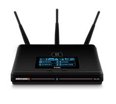

Un router (dall'inglese instradatore) è un dispositivo elettronico che, in una rete informatica a commutazione di pacchetto, si occupa di instradare i dati, suddivisi in pacchetti, fra reti diverse. è quindi, a livello logico, un nodo interno di rete deputato alla commutazione di livello 3 del modello OSI o del livello internet nel modello TCP/IP. L'instradamento può avvenire verso reti direttamente connesse, su interfacce fisiche distinte, oppure verso altre sottoreti non limitrofe che, grazie alle informazioni contenute nelle tabelle di instradamento, siano raggiungibili attraverso altri nodi della rete. Il tipo di indirizzamento operato è detto indiretto contrapposto invece all'indirizzamento diretto tipico del trasporto all'interno delle sottoreti. Esso può essere visto dunque come un dispositivo di interfacciamento tra diverse sottoreti eterogenee e non, permettendone la interoperabilità (internetworking) a livello di indirizzamento